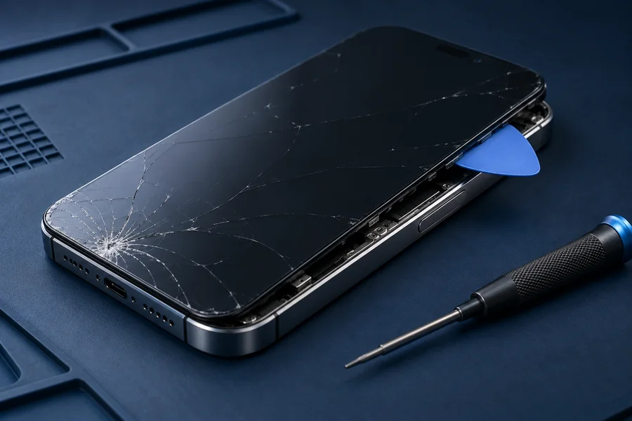
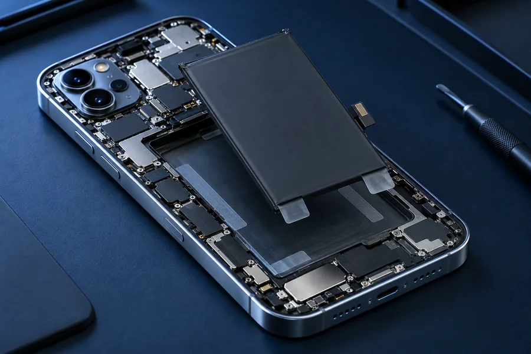
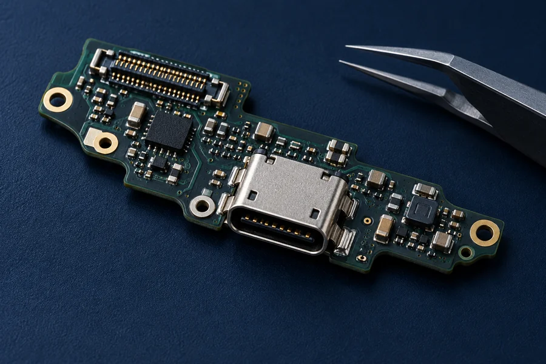
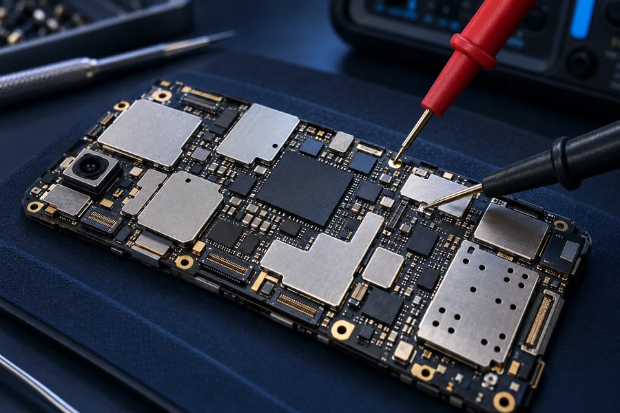
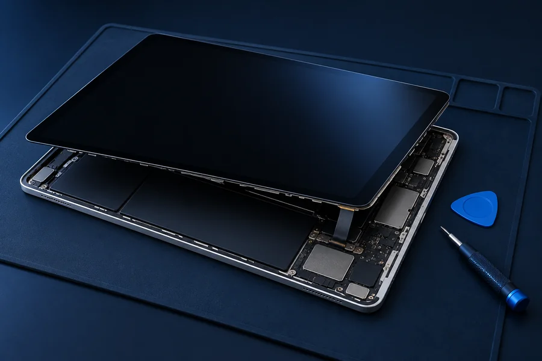
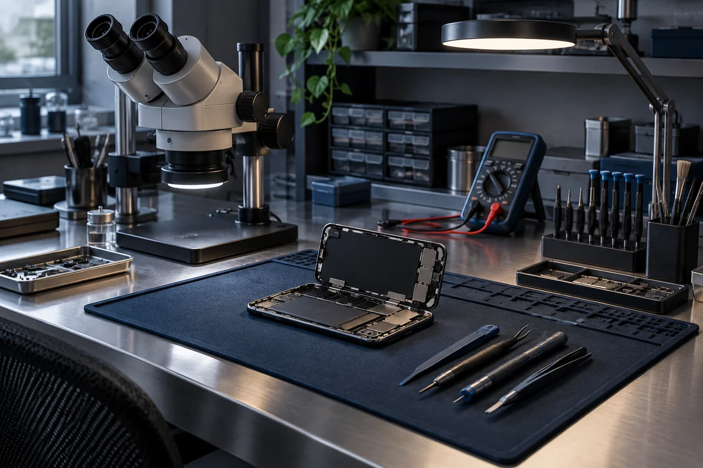
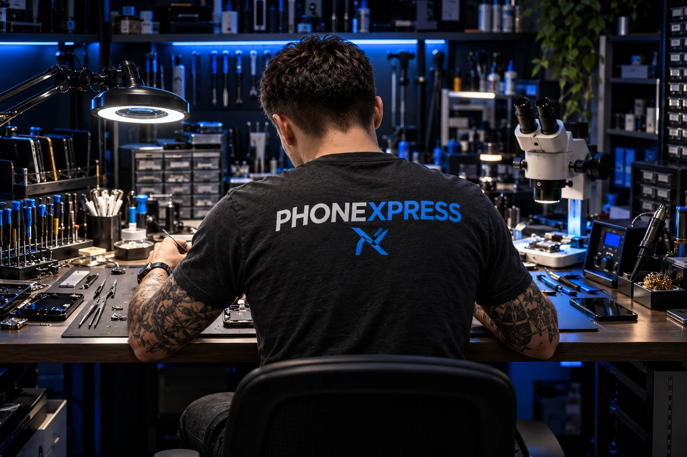

01Écrans & affichage
Écran cassé, tactile défaillant ou affichage abîmé : faisons le point sur votre appareil.
Parler de cette panneÉcran fissuré, batterie fatiguée, panne inexpliquée ? Chez Phone Xpress à Magalas, Thomas vous aide à retrouver un appareil pleinement fonctionnel.
01 / NOS PRESTATIONS
Écran, batterie, connectique ou panne à identifier : chaque appareil mérite une vraie attention. Présentez-nous le vôtre.

01Écran cassé, tactile défaillant ou affichage abîmé : faisons le point sur votre appareil.
Parler de cette panne
02Votre téléphone ne tient plus la journée ? Thomas vérifie la batterie et ses symptômes.
Parler de cette panne
03Câble qui ne tient plus ou charge intermittente ? On identifie la cause avant d’intervenir.
Parler de cette panneUn dos fissuré ? Les possibilités de réparation dépendent du modèle et de ses pièces.
Parler de cette panne
05Appareil qui ne s’allume plus ? Décrivez les symptômes, Thomas étudie le problème.
Parler de cette panne
06Tablettes, montres ou autres appareils : demandez à Thomas si une prise en charge est possible.
Parler de cette panne
02 / LA BOUTIQUE
Chez Phone Xpress, on privilégie la proximité et la discussion. Passez présenter votre appareil ou contactez directement Thomas pour savoir ce qui est possible.
Phone Xpress18 bis ZAE l’AudacieuseAccueil indiqué sans rendez-vous ; appelez pour confirmer les horaires et la disponibilité de Thomas.
03 / VOTRE TECHNICIEN
De votre premier échange jusqu’à la restitution, vous savez à qui vous confiez votre appareil. Thomas prend le temps de comprendre votre panne et de vous expliquer les solutions.

04 / DEMANDE DE DEVIS
Décrivez le problème en quelques instants. Thomas pourra vous recontacter pour en discuter.